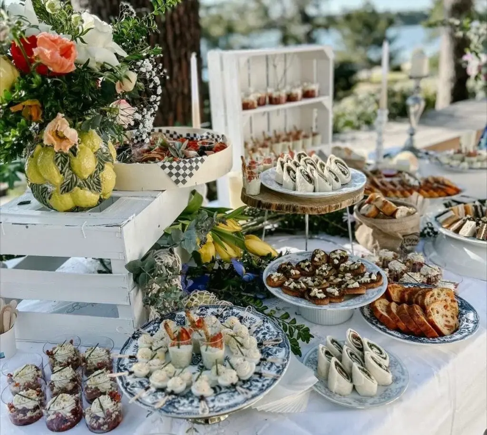
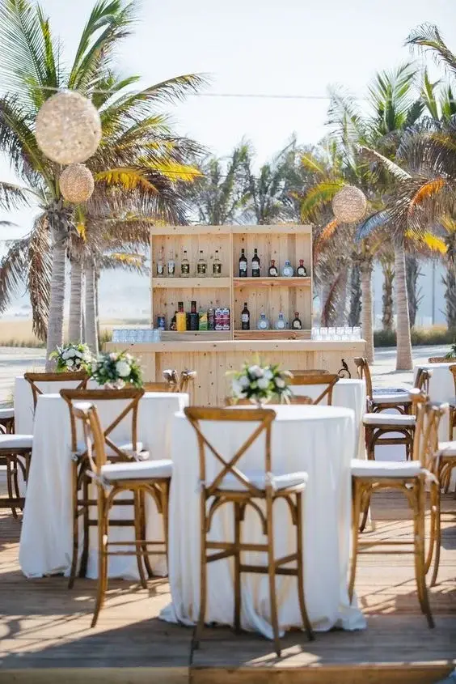
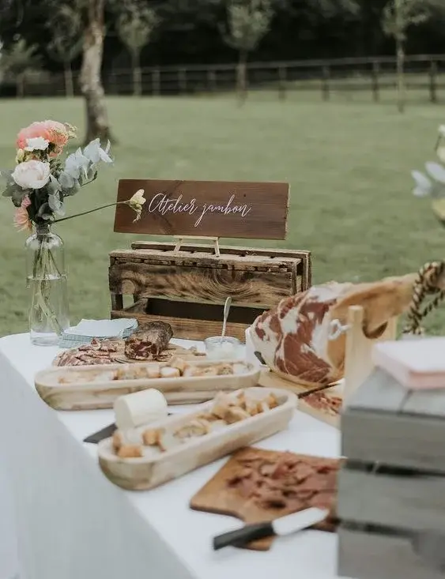
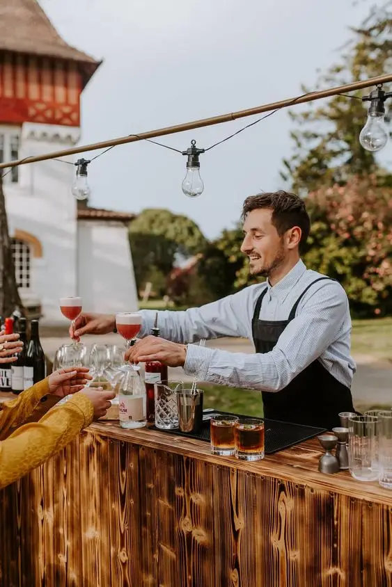
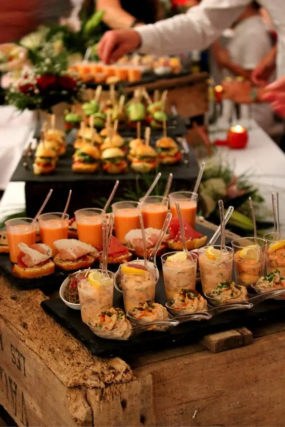

A wedding is a unique event in a lifetime, and the cocktail dinner is one of the modern trends gaining in popularity, helping every couple make the day perfect and memorable. This format is ideal for modern, elegant weddings, offering a relaxed yet chic alternative to traditional seated receptions. The cocktail dinner combines the conviviality of a drinks reception with the generosity of a dinner, creating a rich, varied culinary experience. Here is everything you need to know about the wedding cocktail dinner, from planning to execution, to guarantee a successful, unforgettable celebration.

What is a cocktail dinner?
A cocktail dinner is a reception where guests can enjoy a variety of bites and small portions of dishes, usually served on trays by waiting staff or laid out on buffet tables. Unlike a seated dinner, guests aren't assigned fixed seats. They can move around freely, socialise and savour a wide range of food. This flexible, dynamic format is perfect for couples who want a more informal, interactive reception.
The advantages of a cocktail dinner
A relaxed atmosphere
One of the main advantages of the cocktail dinner is its relaxed atmosphere. Guests can move around, chat with different groups of people and enjoy a livelier atmosphere. This encourages social interaction and makes the event less formal and rigid. Guests aren't obliged to stay seated at a table for several hours, which often makes the reception more relaxed and enjoyable.
Flexibility and variety
The cocktail dinner lets you offer a wide variety of dishes, which is ideal for satisfying every taste and diet. Vegetarian, gluten-free or other dietary options can easily be included on the menu. Guests can taste a multitude of flavours without being limited to a single main course. Culinary diversity is often a strong point of this kind of reception, as it can include influences from different cultures.
Less logistics
Organising a seated dinner requires rigorous planning, including table layout, seating arrangements and coordinated service. A cocktail dinner simplifies these aspects, reducing logistical stress. It can also often be more economical, as it requires fewer serving staff and less equipment hire. Costs for table decor, crockery and furniture hire can be considerably reduced, allowing you to reallocate budget to other important elements such as music or entertainment.
Planning a wedding cocktail dinner

Choosing the venue
The choice of venue is crucial for a cocktail dinner. It must offer enough space for guests to move around freely. An outdoor space or a venue with several connecting rooms can be ideal for creating varied atmospheres. Also think about the weather if you opt for an outdoor reception. Make sure the venue has good lighting, shaded or covered areas, and enough food and drink stations to avoid queues.
With or without a caterer?
Hiring a caterer can greatly simplify the organisation of your cocktail dinner. Professional caterers offer turnkey services, including preparation, service and often decoration. They guarantee consistent quality and elegant presentation. However, this is an extra cost. In general, a caterer specialising in cocktail dinners charges between €50 and €150 per person, depending on the level of service and the complexity of the dishes.
On the other hand, organising a cocktail dinner without a caterer can bring significant savings, with an estimated budget of €20 to €50 per person. It does, however, require meticulous organisation, particularly for preparing the food and managing the service. This option particularly suits couples who want maximum personalisation and have the time and resources to invest in the organisation.


Choosing the food
Variety is crucial for a successful cocktail dinner. Every element must be carefully chosen to offer a varied, balanced culinary experience. It is recommended to plan around 12 to 15 pieces per person, so guests can taste a wide range of dishes without going hungry. The selection should balance canapés, mini dishes and desserts to guarantee a complete, satisfying culinary experience. Make sure you offer options for every diet and a variety of flavours. Also think about including hot and cold dishes, as well as sweet and savoury options.
To add a touch of elegance and interactivity, consider including live food stations. For example, live carving of ham, salmon or foie gras is an increasingly popular attraction. These demonstrations, often offered by caterers, not only let guests savour fresh, quality produce, but also create a gastronomic show that captivates and delights them. These stations add an extra dimension to the event, turning the meal into a true sensory experience.
Presentation and service
The presentation of the canapés is essential for a successful cocktail dinner. Use elegant trays, colourful verrines and creative presentations to impress your guests. Service can be provided by waiting staff circulating among the guests with trays, or via themed buffets where guests help themselves. Food stations can be organised by type of cuisine (Asian, Mediterranean, etc.) or by type of dish (starters, mains, desserts), letting guests discover and taste the different options at their own pace.


Drinks
A successful cocktail dinner relies not only on the variety of dishes, but also on a refined selection of drinks. It is essential to offer a variety of cocktails, wines, beers and soft drinks to satisfy every guest. Think about including signature cocktails that reflect your personality or wedding theme, adding a unique touch to the event. Interactive cocktail bars, where guests can customise their drinks, are very popular and add a playful dimension to the evening.
Don't forget to include alcohol-free options for guests who don't drink. An experienced mixologist can bring a touch of elegance and showmanship by preparing cocktails in front of the guests, making the experience even more memorable.
It is also common to start the cocktail dinner with refreshments after the ceremonies, such as fruit-infused water, homemade iced teas and freshly squeezed juices. A champagne punch can then be served to officially launch the drinks, followed by a selection of fine wines, craft beers, signature cocktails and other refined drinks.
Entertainment and atmosphere
To create a memorable atmosphere, think about including varied entertainment. A live band or a DJ can liven up the evening and encourage guests to dance, especially if they play a range of genres to please everyone. Cocktail stations run by a mixologist add an interactive touch with personalised cocktails. A photo booth with fun props linked to your wedding theme provides entertaining keepsakes for guests. Lighting is also crucial to the atmosphere: use fairy lights, candles and lanterns to create a warm, romantic atmosphere. Finally, think about the furniture layout: lounge corners with sofas and comfortable armchairs where guests can sit and relax.

Tips for a successful wedding cocktail dinner
1 – Anticipate the flow of guests
The layout of the space should make it easy for guests to move around. To avoid bottlenecks, place food and drink stations in different parts of the venue, spreading the flow more evenly. Specific areas for dancing, quiet conversation and activities should be clearly defined, so guests can easily choose where they want to spend their time. Make sure the pathways stay clear for easy, smooth access, and that service areas such as buffets and bars are easy to reach and clearly signposted.
2 – Plan enough food
It is crucial to plan enough food. Guests must be able to eat their fill throughout the evening. Consult your caterer to estimate the quantities needed for the number of guests. It is better to plan a little more food than necessary to avoid running out. Think about back-up options if needed, such as extra platters or dishes ready to be served quickly.
3 – Create relaxation areas
Even if the concept of a cocktail dinner means guests stay on their feet, it is important to provide relaxation areas with comfortable seating where they can rest and chat quietly. Sofas, deckchairs and poufs can offer comfortable spaces for those who want a break. These areas can also be decorated in a themed way to fit in with the overall atmosphere of the event.
4 – Consider the timing
Timing is essential for maintaining good momentum. Alternate the moments when new dishes are served with breaks for entertainment or speeches. This keeps guests interested and gives the evening its rhythm. Also plan the key moments, such as the toasts, the first dance and the cutting of the cake, so that they fit naturally into the running order of the reception.
5 – Personalise your event
It is important to bring a personal touch to your cocktail dinner by including elements that faithfully reflect your style and personality. Whether through the choice of dishes, the decor or the entertainment, personalise every aspect of the event to make it truly unique. Think about including details such as gifts for guests, a corner with a card box, a guest book and photographs capturing your most precious moments together, to add a personal, warm dimension to the wedding.




In short…
The wedding cocktail dinner offers a modern, elegant alternative to traditional receptions, letting couples create a rich, varied culinary experience. It is an ideal choice for those looking for a relaxed, interactive atmosphere, where guests can taste a variety of dishes while socialising freely. By personalising every detail, whether through the choice of dishes, themed decor or entertainment, you can truly make your event a unique, memorable moment. Be sure to anticipate the flow of guests, plan enough food and create comfortable relaxation areas. With careful planning and attention to detail, your wedding cocktail dinner will be a successful celebration that leaves all your guests with unforgettable memories.